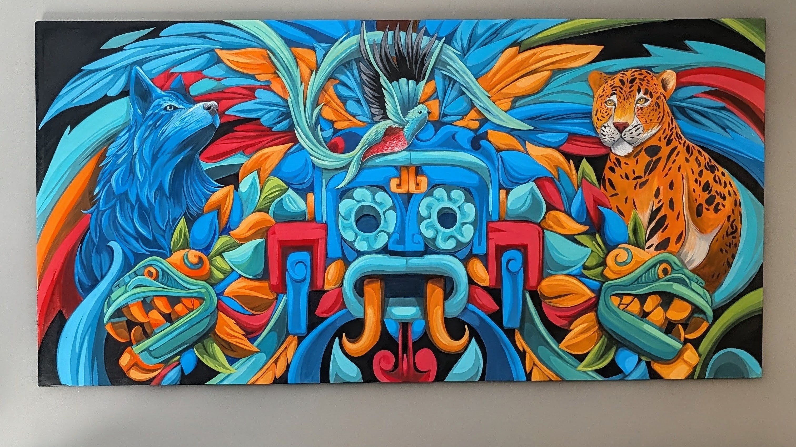
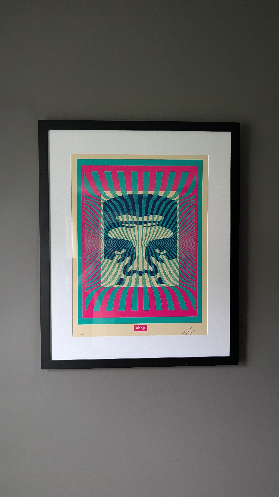
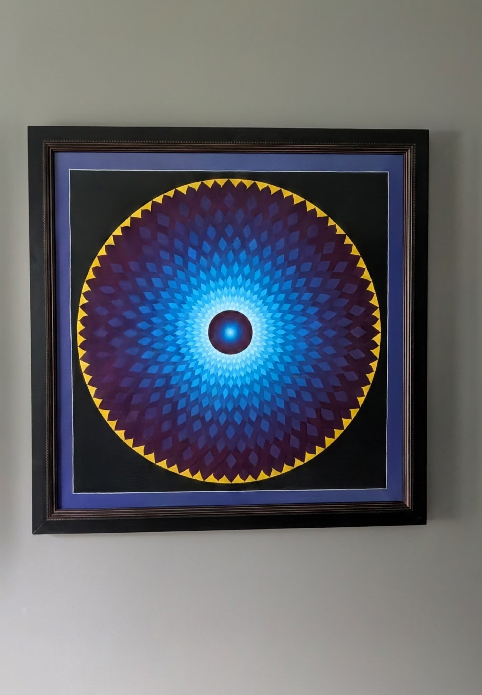
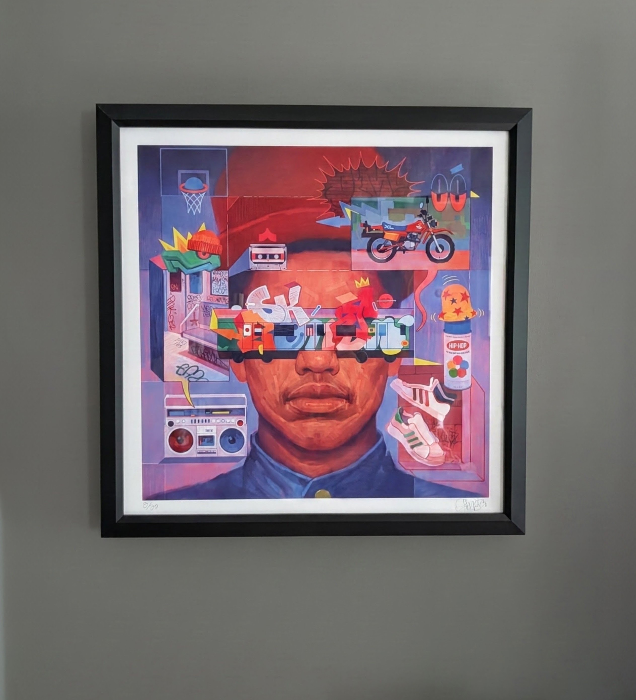
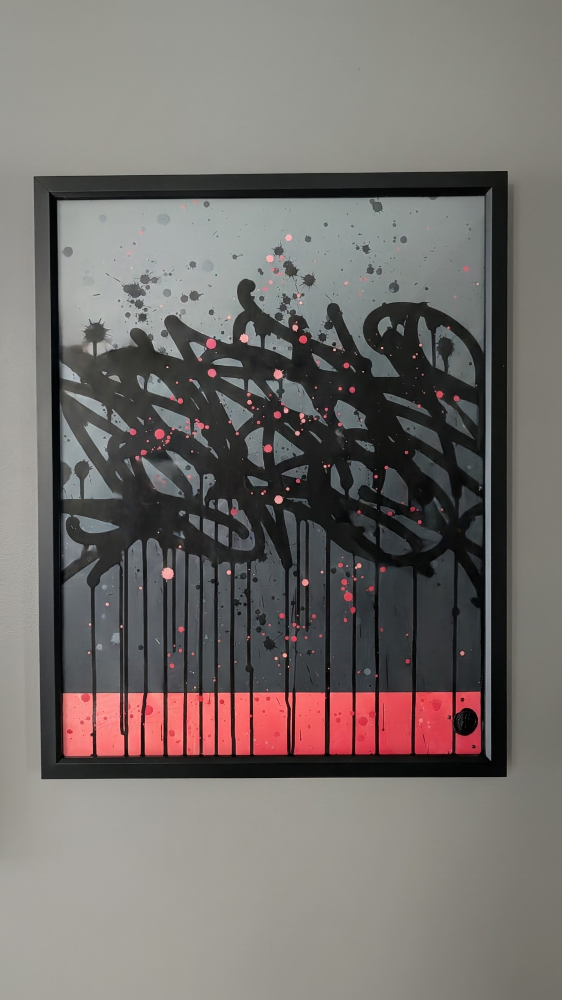
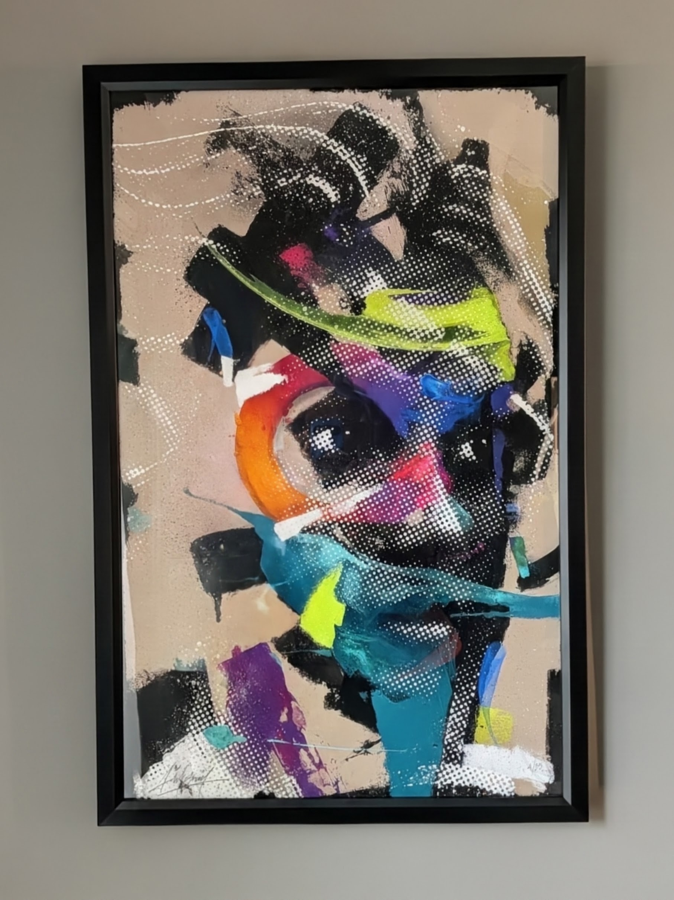
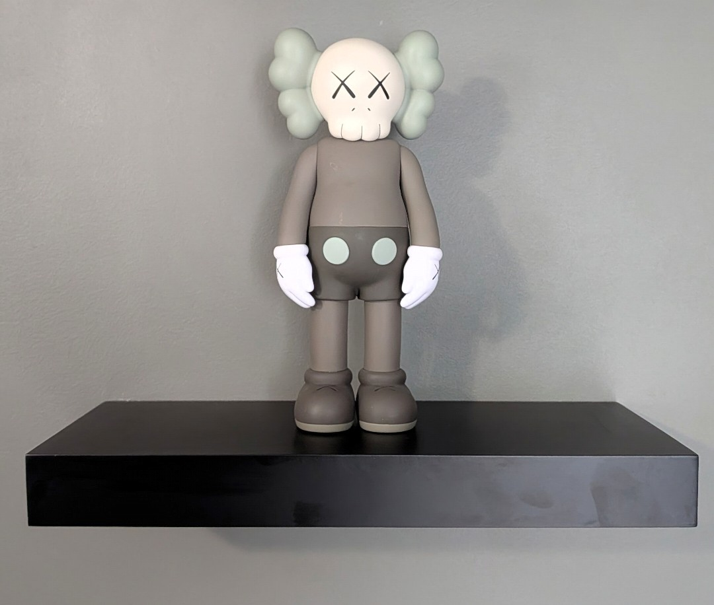
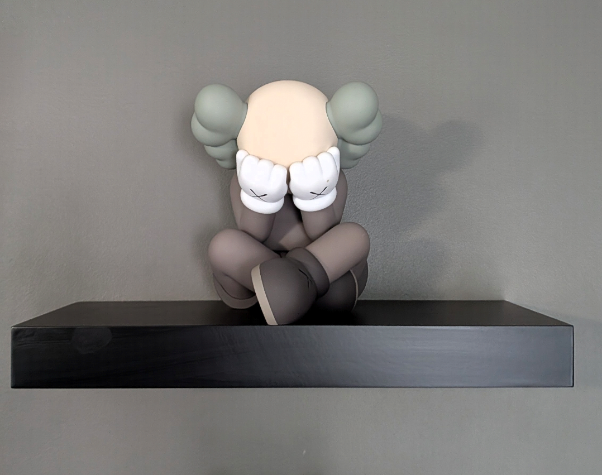
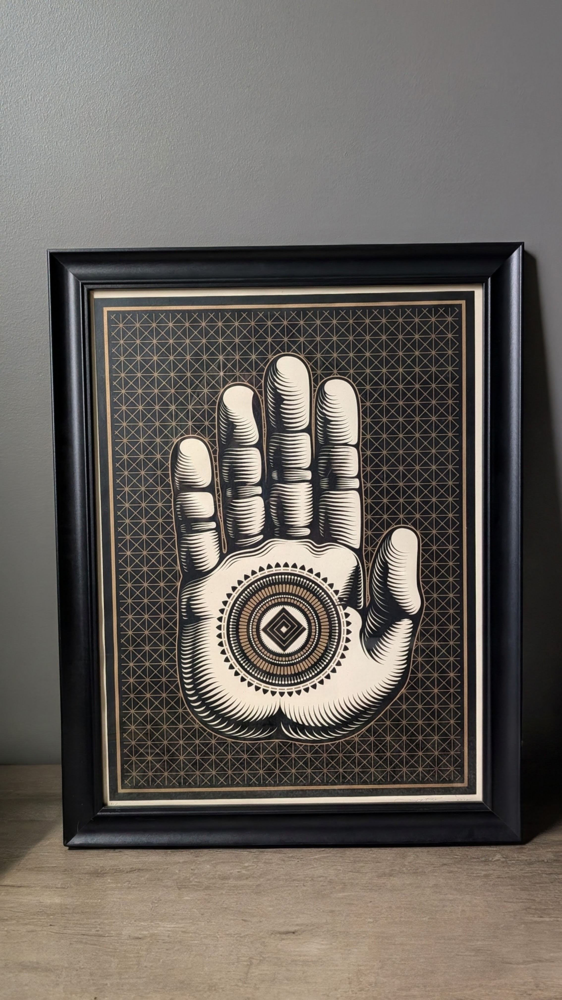
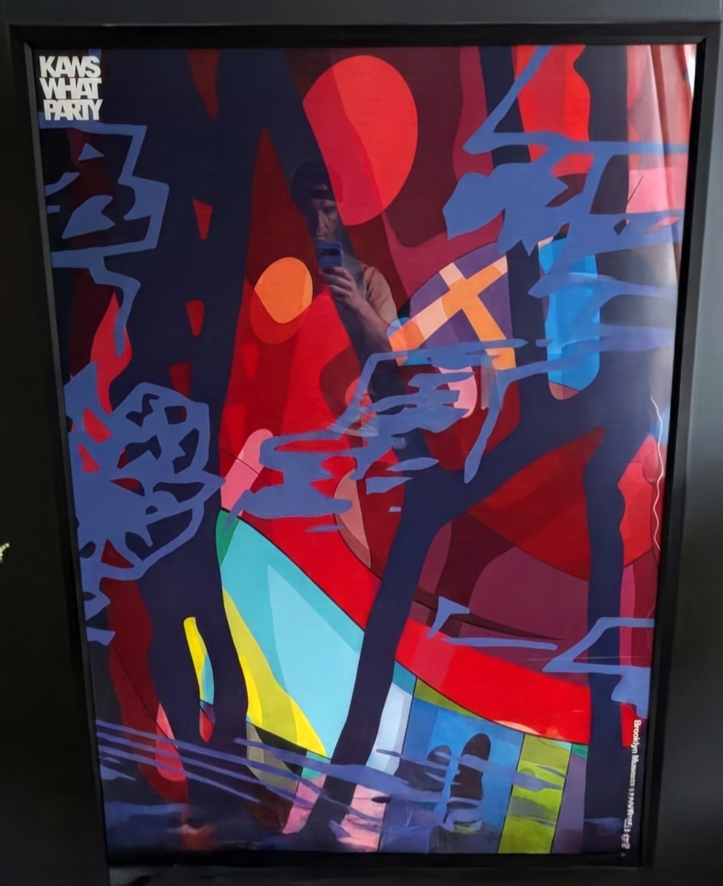

Art
A personal collection, currently being catalogued.

A personal collection, currently being catalogued.
The pieces I've collected over the years — each with the artist behind it, the story of the work, and the work itself.
All credit here belongs to the artists. The creativity, the hours, and the planning in these works are theirs alone — I'm just lucky enough to have them on my wall, where they do their quiet work of daily inspiration.
One more credit: Rich Cihlar of Pop Shop Gallery did all the good framing work on this wall. I did all the bad framing work.
Screenprint on Speckletone cream paper, 18 × 24 in. Edition 399 of 550, signed and numbered in pencil by both Shepard Fairey and photographer Ted Soqui.
Fairey built the image on Soqui's photograph from the 1992 Los Angeles riots — the torn Los Angeles Times headlines in the collage are from that spring. The edition dropped on April 30, 2020, sold out in minutes, and its proceeds went to the Watts Labor Community Action Committee.

Screenprint on cream Speckletone paper, 18 × 24 in. Edition 405 of 500, signed and numbered in pencil.
Released in the first weeks of the pandemic, March 2020, as a fundraiser — Fairey's angel raising a lotus was his call for hope, compassion, and resilience in the face of adversity. Proceeds went to the Mayor's Fund for Los Angeles and the World Harvest Food Bank.

Signed print of the layered scrap PVC original. The original was built during the 2020 lockdown: with the art stores closed and no canvas to be had, Peck cut the piece from offcuts at his sign shop instead. Turn it 90 degrees clockwise and the title reveals itself — an Eye of Horus, the ancient Egyptian symbol of protection, healing, and well-being, painted on boats and worn as an amulet to ward off harm. Abstracted, of course.
Peck is a Cleveland graffiti writer more than thirty-five years deep, who followed the backgrounds of his own pieces — the loose sprays, wisps, and bursts — into abstract expressionism. He's painted murals and public commissions across the region for two decades, presented graffiti history with the Rock and Roll Hall of Fame, and works with Graffiti HeArt, which funds art scholarships for under-served kids. A hometown pick, from the same Cleveland graffiti tradition I came out of.

All painting by Asmoe Roc — he deserves all the credit for bringing this idea to life. The brief: an Azteca/Mayan-style painting with an animal representing each of my kids, chosen for their qualities, and an Olmec for myself. We collaborated on the balance — the symmetry of the focal points — and the color palette, and it came out better than I ever could have imagined.
Asmoe Roc is a Malaysian-born graffiti writer, painting walls since 2011 and a member of the international TMD Crew. A project architect by day, his work is known for its consistent line work, intricate detail, and strong characters — hip-hop culture fused with architectural discipline. Every quality on display here.
The painting arrived unnamed, so the name came from its second life: a children's short story I wrote with these figures as its heroes, titled Timeless Bond. The painting now carries the same title — Vínculo Eterno, in the Spanish of its Azteca roots. The story stays locked in the vault — for now.

Screenprint on thick cream Speckletone paper, 18 × 24 in. Edition 122 of 250, signed and numbered in pencil.
Thirty years after his early rave-era flirtations with psychedelia, Fairey circled back to it — the Obey icon face dissolved into pulsing op-art stripes, colors weaving through the image with what he calls the effect of subtle translucency through spray-paint texture. One of four colorways released in February 2024; his stated principle for the series: repetition with evolution. The third Fairey in this collection.

Hand-painted mandala — rings of lotus petals radiating outward from a luminous core, cool light-blues deepening into purples, the whole wheel edged in golden flame points on a black ground.
Painted by a monk in Nepal. I had his full backstory — who he was, where he painted, how this one came to be — and lost it when I switched phones. I'm still trying to recover it, and this entry will grow when I do. Until then the painting does what mandalas are made to do: it holds the center of the room, and it doesn't need my notes to work.

Signed and numbered print, edition 8 of 50, made for hip-hop's 50th birthday in 2023. A young head held perfectly still while the whole culture orbits it: a graffiti-burned subway car riding across his eyes, a boombox, shell-toe Superstars, a cassette, a dirt bike, and a spray can relabeled the way it always should have been — HIP-HOP. Rodriguez called it a small slice of the element of the culture that remains untamed. Ordered February 2024.
Rodriguez came up through east-side San José graffiti before a BFA at California College of the Arts, and built a style he calls Type Faces — portraiture fused with typography and abstract shapes. His work has run from neighborhood murals to Puma, Under Armour, and Google. Another artist out of the graffiti tradition, which is becoming the through-line of this wall.

1/1 original from the For the Love of Colors paper painting series — spray paint, acrylics, and ink on fine art paper, finished with the artist's wax seal at the lower right. Layered black script swept across a grey ground, the drips left to run all the way down into a coral band at the base, like the letters are still wet. Acquired July 2026.
Kiewra describes the series as a process of exploration — testing color combinations, layering gradient backgrounds, and pushing letterforms across fine art paper to find what truly resonated. Dozens of combinations, every one a study: some fast, instinctual moves; others slow, methodical tests of contrast. He's an Amsterdam-based artist who started tagging walls as a kid, picked up a spray can at twelve, and built a language that balances chaos and control — graffiti's raw energy run through a designer's discipline.

Special edition print on 300g 100% cotton paper, 80 × 50.6 cm, signed and numbered by the artist — based on his original canvas Suyen, and released by HelioBrayStudio as the last edition print of 2024. A face built out of interference — halftone dot fields and slashes of teal, orange, neon yellow, magenta, and purple over a warm tan ground — with one dark eye rendered clearly at the center of it all, holding the whole storm still.
Bray is a Portuguese artist, born Helio Ferreira in Lisbon, who painted his first wall at an abandoned factory in Azeitão in 1998 having never seen graffiti before. By 2012 the wall work moved into the studio, where spray-paint grit meets figurative portraiture — the collision this print is made of. Another one for the wall's graffiti lineage.

Open edition vinyl, 11 in., produced by Medicom Toy for the November 2016 drop alongside the Where the End Starts retrospective in Fort Worth. The first sculpture in the collection — everything else here hangs; this one stands watch.
Companion is KAWS's signature character: Mickey's proportions with a skull-and-crossbones head and the trademark XX eyes, first released in 1999 as a run of 500 toys and now one of the most recognizable figures in contemporary art. KAWS is Brian Donnelly — a Jersey City graffiti writer who went from repainting bus-shelter ads to museum retrospectives, which makes him another branch of the same tradition running through this whole wall.

Vinyl, 7.75 in., released February 2021 to mark the opening of KAWS's What Party retrospective at the Brooklyn Museum. The Companion sits cross-legged, head down, gloved hands over its face — grief rendered in a toy, and somehow more affecting for it.
It keeps the standing Companion company on the shelf: one figure facing the room, one that can't. Together they cover about the full range of running a business.

Signed print — an open hand raised in the gesture of fearlessness, built from fine engraved linework, with a sacred-geometry mandala set into the palm and a gold lattice woven through the black ground behind it.
Cryptik is a Los Angeles artist whose work sits at the intersection of street art and spirituality — stylized letterforms drawn from ancient scripts and cholo lettering, portraits of spiritual teachers, and the Cryptik Movement, his public-art campaign aimed at nudging people toward a deeper philosophy of life. Between the daruma running through this site, the mandala from Nepal, and this palm, the wall keeps finding its way East.

Exhibition poster from KAWS: What Party, the 2021 Brooklyn Museum retrospective — a quarter century of his work in one show, from graffiti and subverted bus-shelter ads to the Companions. The poster carries one of his dense abstract paintings: a dark landscape in reds and blues, a red sun, and his cartoon squiggles slicing through the whole composition.
It pairs with the Separated figure on the shelf — both came out of the same show. If you look closely at the glass you'll also catch a bonus self-portrait of the collector, taking the photo.
More of the collection is being catalogued.